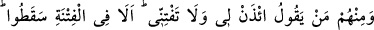
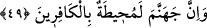

Hasan Basrî: O kişinin evinde ne yedin?
Adam: Şunları şunları... diyerek sekiz türlü yemek saydı.
Hasan Basrî: “Karnın sekiz türlü yemeği almış, bir tek sözü mü alamadı, tutamadı.
Defol yanımdan ey fâsık!” dedi.
Bu da göstermektedir ki, insanlar arasında söz taşıyan kimseye buğzetmek ve onun
sadâkatına güvenmemek gerekir.
er-Ravda ve el-İhyâ’da anlatıldığına göre hikmet sahibi bir zâtı dostlarından birisi
ziyaret eder ve bir başkası hakkında kovuculuk yapar. Hikmet sahibi zât ona şöyle der:
“Ziyarette geciktin. Bana ise üç günah getirdin: Kardeşime buğzettirdin. Boş olan
gönlümü meşgul ettin. Emin olan nefsini töhmet altında bıraktın.”
Mülkün ve hükmün sahibi olan Allah kusurlarını affetsin ihvânın (kardeşlerimizin),
özellikle bu zamandakilerin âdeti böyledir. Akıllı insanın kötü sözlerden ve her türlü
günahlardan dilini ve âzâlarını muhâfaza etmesi gerekir. “Çünkü kulak, göz, gönül,
bunların her biri yaptıklarından sorumludurlar.” (el-İsrâ, 17/36).
49. İçlerinden öylesi var ki: “Bana izin ver, beni fitneye düşürme.” der. İyi bilin
ki, onlar zaten fitneye düşmüşlerdir. Cehennem de kâfirleri kuşatacaktır.”
Ey Muhammed! “içlerinden” münâfıklardan “öylesi var ki” Tebük gazvesine
katılmamak için sana “Bana izin ver, beni fitneye düşürme.” yani masiyete ve günaha
düşürme “der.” O münâfık bu sözüyle şunu demek istiyordu: İzin versen de vermesen
de ben kesinlikle savaşa katılmayacağım. Öyleyse izin ver ki emrine muhâlefet etmek
sûretiyle günaha girmiş olmayayım. Ya da şunu demek istiyordu: Beni kıtlık ve
yoksulluğa atma. Çünkü seninle beraber savaşa çıkarsam ilgilenecek kimse olmadığı
için malım ve ailem mahvolur.
“İyi bilin ki, onlar zaten fitneye” fitneye aykırı bir şeyin içine değil, bizzat fitnenin
içine, fitnenin en âlâsına “düşmüşlerdir.” Düştükleri fitne, savaştan geri kalma, Rasûl
(a.s.)’ın emrine muhalefet ve münâfıklığın ortaya çıkmasıdır. Yani onlar sakındıklarını
iddia ettikleri şeye zâten düşmüşlerdir. Fitne, işte içine düştükleri bu durumdur, yoksa
yanaşmak istemedikleri Tebük seferine çıkma yükümlülüğü değil.
“Cehennem de kâfirleri kuşatacaktır.” Bu cümle daha önce geçen cümleye bağlıdır
ve “iyi bilin ki” şeklinde ifâde edilen tenbihe dâhildir. Yani, cehennem kıyâmet
gününde münâfıkları ve diğer kâfirleri her yönden kuşatacaktır. Onlar kesin kes
cehenneme gireceklerdir. Çünkü bir şey insanı ihâta ediyorsa ondan kurtulamaz. Nitekim